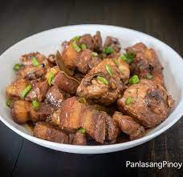

Pork and Chicken Adobo

Description
Joni's favorite Dish. This dish doesn't spoil right away and best served hot on steamed rice. A recipe serving for 4 people.
Ingredients
- 1¼ pounds boneless pork loin roast, cut into 2-inch pieces
- 1¼ pounds boneless, skinless chicken thighs, trimmed and cut into 2-inch pieces
- 2 teaspoons salt, or amount to taste
- ½ tablespoon black peppercorns, coarsely ground
- 2 tablespoons crushed garlic
- 2 bay leaves, torn
- 1 cup white vinegar
- ¼ cup soy sauce
- 1 tablespoon vegetable oil
- 2 cloves garlic, smashed
Procedures:
- Season pork and chicken with salt and pepper and place in a stock pot. Rub with crushed garlic and torn bay leaf, and coat with vinegar and soy sauce. Cover, and marinate in the refrigerator at least 2 hours or overnight.
- Bring meat and marinating liquid to a boil in a cast iron casserole or Dutch oven. Reduce heat to a simmer and cook until meat is tender, about 30 minutes. If necessary, add water to prevent sauce from drying out.
- Strain liquid from meat and set aside; discard bay leaves. Heat 1 tablespoon oil in a large skillet over medium-high heat. Brown the pork and chicken on all sides; reduce heat and stir in remaining 2 cloves of smashed garlic. Cook and stir for 2 minutes more. Pour in reserved cooking liquid, and continue simmering until sauce is slightly thickened. Serve hot.
Menu